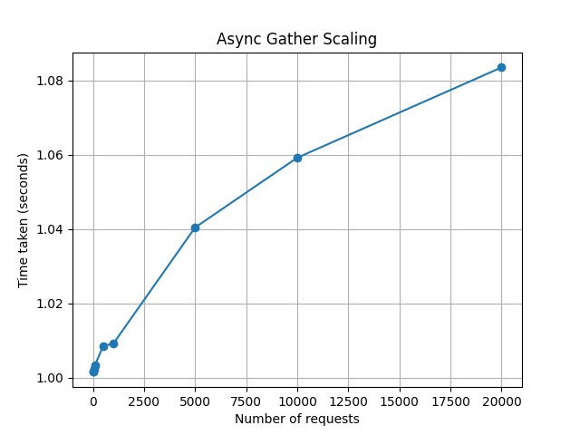
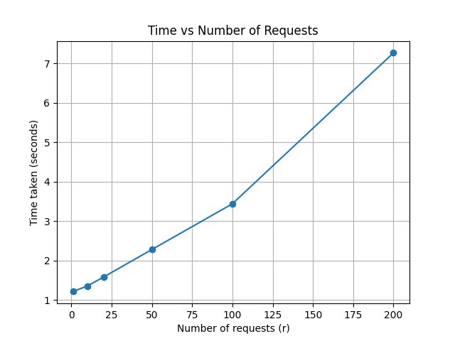
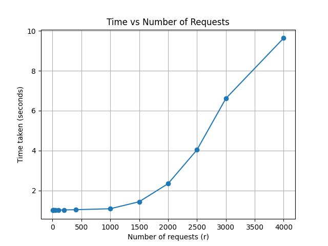
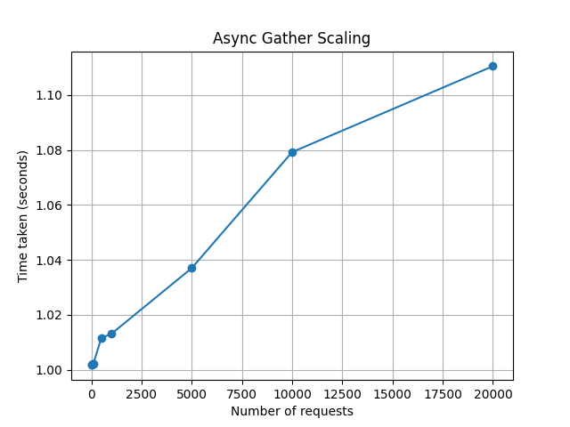
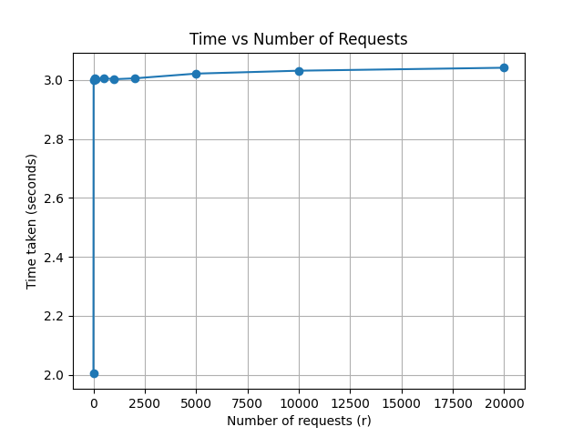

asynchronous Python
with Generators// How coroutines work under the hood — built from first principles
In the previous post, we explored why CPython uses the GIL and how threads
are limited for IO-bound workloads. In this post, let's understand how async works under
the hood by building a coroutine scheduler from scratch using generators.
Consider an extremely useless program that waits for some remote database operation and then returns a random integer. The write operation takes a second, while the number generation is almost instant.
import time
import random
def generate_random():
time.sleep(1) # Mock db call
return random.randint(0, 100)The program works fine if we want to generate a few integers (1–5). But what if we want to generate 100, 1000, or 10000 integers? How do we avoid waiting 10k seconds to generate 10k numbers?
The program, albeit useless, mimics a simple microservice API which, when hit, makes some database calls,
hits another API, fetches the response, and returns the result to the user. You might have built such APIs
yourself using FastAPI, and I am sure that while doing so you used an async def function
instead of a plain def function. But do you truly know what async is doing under
the hood?
Let's begin by converting this to an async program and confirming that it really works.
import random
import matplotlib.pyplot as plt
import time
import asyncio
async def generate_random():
await asyncio.sleep(1) # mock db call
return random.randint(0, 100)
async def benchmark():
res = []
test_points = [1, 10, 50, 100, 500, 1000, 5000, 10000, 20000]
for r in test_points:
tasks = [generate_random() for _ in range(r)]
start = time.perf_counter()
await asyncio.gather(*tasks)
end = time.perf_counter()
elapsed = end - start
print(f"requests={r}, time={elapsed:.4f}s")
res.append((r, elapsed))
return res
async def main():
res = await benchmark()
x = [r for r, _ in res]
y = [t for _, t in res]
plt.plot(x, y, marker="o")
plt.xlabel("Number of requests")
plt.ylabel("Time taken (seconds)")
plt.title("Async Gather Scaling")
plt.grid(True)
plt.savefig("async.png")
plt.show()
if __name__ == "__main__":
asyncio.run(main())It generates all 20 000 integers in under 1.1 seconds.

Let's also run the same benchmark with multiprocessing and multithreading. You'll notice that they quickly hit a ceiling.
import random, time, matplotlib.pyplot as plt, multiprocessing
def fetch_data():
time.sleep(1)
return random.randint(0, 5)
if __name__ == "__main__":
res = []
test_points = [1, 10, 20, 50, 100, 200]
for r in test_points:
processes = [multiprocessing.Process(target=fetch_data) for _ in range(r)]
start = time.time()
for p in processes: p.start()
for p in processes: p.join()
end = time.time()
print("time taken", end - start)
res.append((r, end - start))
plt.plot([r for r, t in res], [t for r, t in res], marker='o')
plt.xlabel("Number of requests (r)"); plt.ylabel("Time taken (seconds)")
plt.title("Time vs Number of Requests"); plt.grid(True)
plt.savefig("mp.png"); plt.show()
import random, time, threading, matplotlib.pyplot as plt
def fetch_data():
time.sleep(1)
return random.randint(0, 5)
if __name__ == "__main__":
res = []
test_points = [1, 10, 20, 50, 100, 200, 400, 1000, 1500, 2000, 2500, 3000, 4000]
for r in test_points:
threads = [threading.Thread(target=fetch_data) for _ in range(r)]
start = time.time()
for t in threads: t.start()
for t in threads: t.join()
end = time.time()
print("time taken", end - start)
res.append((r, end - start))
plt.plot([r for r, t in res], [t for r, t in res], marker='o')
plt.xlabel("Number of requests (r)"); plt.ylabel("Time taken (seconds)")
plt.title("Time vs Number of Requests"); plt.grid(True)
plt.savefig("threads.png"); plt.show()
First, just because you launch n processes does not mean they run in parallel. Parallelism is constrained by the hardware. If your machine has m cores, it can only run m programs in parallel — the rest wait their turn. When n > m, the OS juggles the processes by giving each process a small time-slice on the available cores and then switching between them. This process is called context switch. Every context switch involves saving the state of the current process and loading the state of the next to resume it, and hence has an overhead.
In our program, the CPU schedules the db request, and then spends most of its time sleeping, waiting for a remote database response. It is hence, IO-bound, not Compute-bound. It hardly needs any compute. Creating hundreds of such processes just wastes memory and adds unnecessary context-switch overhead. Hence, multiprocessing is not ideal to scale IO-bound programs.
Like processes, threads in Python's native threading library are also managed by the OS. The
key difference is that threads are lighter
— because they share the heap, the overhead of scheduling them is cheaper. Hence, threads scale better
than processes in this example, but they still hit a wall.
We now know that IO-bound programs do not work well with multiprocessing or multithreading. But, we also know that during IO, the CPU is idle. Can us, programmers, use this as an advantage in the application? Can we make our program proceed with the next task while waiting for the current one?
Let's assume the database call always takes 1 second. We know that if the function is called at time t, it will not be ready to continue until t + 1. During this window the CPU is idle. If we build a mechanism to pause our function at t and resume it at t + 1, we can give the CPU other work in between. Normal functions are not state-aware — you cannot run them to a certain point, pause them, and then resume. However, generators provide this flexibility.
Consider the following generator function. Notice that it uses yield instead of
return.
def get_number():
i = 0
yield i
i += 1
yield i
i += 1
yield i
If you call it like a normal function, you only get a generator object back. Every generator object in
Python has the __next__ method. When called, __next__ runs the function up to
the next yield and then suspends it. So the first call in the snippet below prints
0.
if __name__ == "__main__":
gen = get_number()
print(gen)
print(gen.__next__()) # or: print(next(gen))On the subsequent call, the program prints 1:
print(gen.__next__())
print(gen.__next__())__next__ on a generator that has already been exhausted —
it raises StopIteration.
So we have a simple function that we can pause and resume. We can use this to create an infinite number
generator, and it even works inside a for loop:
def get_numbers():
i = -1
while True:
i += 1
yield i
if __name__ == "__main__":
gen = get_numbers()
print(gen.__next__())
for num in gen:
print(num)
if num == 10:
break
We can now use yield in our program to suspend the function. Let's yield the tuple
("sleeping", 1) to signal to the caller: "please resume me after 1 second."
import time
import random
def generate_random():
yield "sleeping", 1
return "running", random.randint(0, 100)
We can now write a scheduler that, for n random-number
requests, fires up n instances of the generate_random generator. All generators kick
off their IO work simultaneously. After 1 second passes, we invoke them again to collect the results.
import time
import random
import matplotlib.pyplot as plt
def generate_random():
yield "sleeping", 1
yield "running", random.randint(0, 100)
def schedule(n):
generators = [generate_random() for _ in range(n)]
values = []
for g in generators:
state, val = next(g)
time.sleep(1)
for g in generators:
state, val = next(g)
values.append(val)
print(f"generated {len(values)} values")
if __name__ == "__main__":
res = []
test_points = [1, 10, 50, 100, 500, 1000, 2000, 5000, 10000, 20000, 50000, 100000]
for r in test_points:
start = time.time()
schedule(r)
end = time.time()
print("time taken", end - start)
res.append((r, end - start))
plt.plot([r for r, t in res], [t for r, t in res], marker='o')
plt.xlabel("Number of requests (r)")
plt.ylabel("Time taken (seconds)")
plt.title("Time vs Number of Requests")
plt.grid(True)
plt.savefig("asynch.png")
plt.show()
Like the asyncio example, this works well even for 10k integers. The maximum wait time is
always close to 1 second regardless of how many generators are in flight.
Let's make this more realistic. Suppose the wait is now random, anywhere between 1 and 3 seconds:
def generate_random():
yield "sleeping", random.randint(1, 3)
yield "running", random.randint(0, 100)Now our scheduler cannot simply fire all generators, sleep for one second, and fire them again. It needs to track when each generator is next ready to run. We solve this with a min-heap sorted by wake-up time:
import time
import random
import heapq
import matplotlib.pyplot as plt
def generate_random():
yield "sleeping", random.randint(1, 3)
yield "running", random.randint(0, 100)
def schedule(n):
generators = [(0, i, generate_random()) for i in range(n)]
heapq.heapify(generators)
sleep_time = float("inf")
values = []
while len(generators):
while len(generators):
wake_up_time, idx, coro = heapq.heappop(generators)
now = time.time()
if wake_up_time < now:
status, value = next(coro)
if status == "sleeping":
if value < sleep_time:
sleep_time = value
heapq.heappush(generators, (value + now, idx, coro))
else:
values.append(value)
else:
heapq.heappush(generators, (wake_up_time, idx, coro))
sleep_time = wake_up_time - now
break
if len(generators):
time.sleep(sleep_time)
print(f"generated {len(values)} values")
if __name__ == "__main__":
res = []
test_points = [1, 10, 50, 100, 500, 1000, 2000, 5000, 10000, 20000, 50000, 100000]
for r in test_points:
start = time.time()
schedule(r)
end = time.time()
print("time taken", end - start)
res.append((r, end - start))
plt.plot([r for r, t in res], [t for r, t in res], marker='o')
plt.xlabel("Number of requests (r)")
plt.ylabel("Time taken (seconds)")
plt.title("Time vs Number of Requests")
plt.grid(True)
plt.savefig("asynch.png")
Each generator is placed in a min-heap keyed by its wake-up time. The scheduler iterates over the heap and processes every generator that is ready to run. As soon as it encounters one that isn't ready, it stops because all subsequent entries in the heap are also not ready. This avoids wasteful checks across all n generators on every iteration.
asyncio connects to this
This is loosely how coroutines, async functions, work in Python. The
asyncio library has a scheduler that queues all the coroutines. Consider the example below:
import asyncio
async def coro1():
print("coro1 sleeping")
await asyncio.sleep(1)
print("coro1 halfway done")
await asyncio.sleep(1)
print("coro1 done")
async def coro2():
print("coro2 sleeping")
await asyncio.sleep(1)
print("coro2 halfway done")
await asyncio.sleep(1)
print("coro2 done")
async def run():
tasks = [coro1(), coro2()]
await asyncio.gather(*tasks)
if __name__ == "__main__":
asyncio.run(run())
asyncio adds both coroutines to a queue. It runs coro1 until the first
await (which is analogous to yield in the generator example), then switches to
coro2 and does the same. After 1 second it resumes them in order. In short, await
is the coroutine equivalent of yield. A coroutine runs until its next await,
then hands control back to the scheduler, which proceeds with other coroutines before returning.
The generator example is good to understand how coroutines work, but it uses an assumption that breaks in the real world. We rely on the generator to tell the wait time upfront. However, if you're waiting for a response from a URL, you have no reliable way of knowing in advance how long the server will take. So the question becomes — how does the scheduler know when to resume a coroutine? That's what we'll explore in the next post.